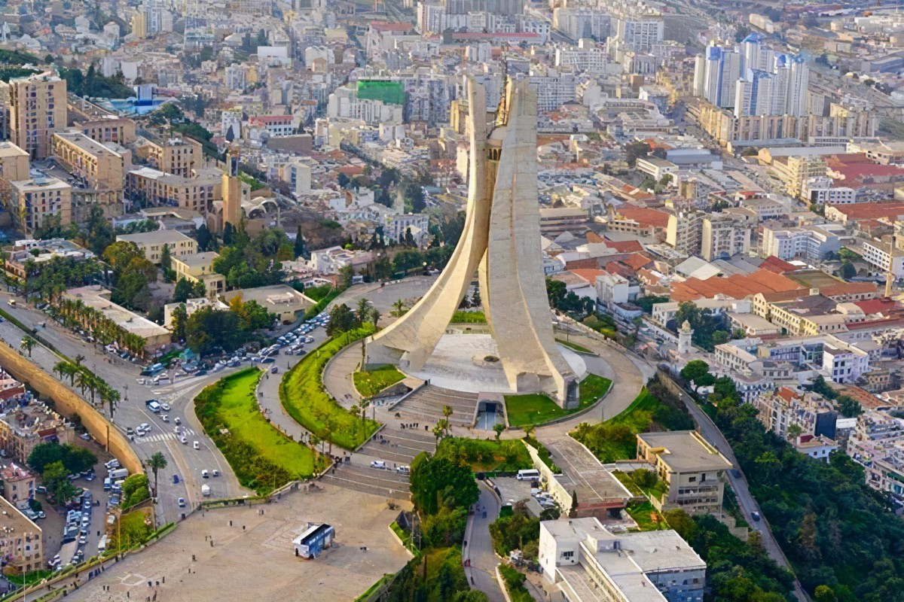

Algeria: A land of art and history
Algeria, officially the People's Democratic Republic of Algeria, is a country in North Africa. Algeria is bordered to the northeast by Tunisia; to the east by Libya; to the southeast by Niger; to the southwest by Mali, Mauritania, and Western Sahara; to the west by Morocco; and to the north by the Mediterranean Sea. It is considered to be a part of the Maghreb region of North Africa. It has a semi-arid geography, with most of the population living in the fertile north and the Sahara dominating the geography of the south. Algeria covers an area of 2,381,741 square kilometres (919,595 sq mi), making it the world's tenth largest nation by area, and the largest nation in Africa, being more than 200 times as large as the smallest country in the continent, The Gambia.[9] With a population of 44 million, Algeria is the ninth-most populous country in Africa, and the 32nd-most populous country in the world. The capital and largest city is Algiers, located in the far north on the Mediterranean coast.
Around ~1.8-million-year-old stone artifacts from Ain Hanech (Algeria) were considered to represent the oldest archaeological materials in North Africa.[16] Stone artifacts and cut-marked bones that were excavated from two nearby deposits at Ain Boucherit are estimated to be ~1.9 million years old, and even older stone artifacts to be as old as ~2.4 million years.[16] Hence, the Ain Boucherit evidence shows that ancestral hominins inhabited the Mediterranean fringe in northern Africa much earlier than previously thought. The evidence strongly argues for early dispersal of stone tool manufacture and use from East Africa, or a possible multiple-origin scenario of stone technology in both East and North Africa.